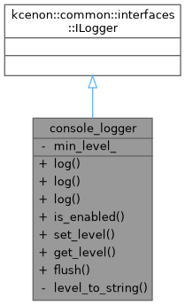
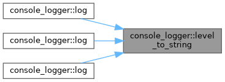

Simple console logger implementation using common_system ILogger. More...


Public Types | |
| using | VoidResult = kcenon::common::VoidResult |
| using | log_entry = kcenon::common::interfaces::log_entry |
| using | source_location = kcenon::common::source_location |
Public Member Functions | |
| VoidResult | log (common_log_level level, const std::string &message) override |
| VoidResult | log (common_log_level level, std::string_view message, const source_location &loc=source_location::current()) override |
| VoidResult | log (const log_entry &entry) override |
| bool | is_enabled (common_log_level) const override |
| VoidResult | set_level (common_log_level level) override |
| common_log_level | get_level () const override |
| VoidResult | flush () override |
Private Member Functions | |
| std::string | level_to_string (common_log_level level) const |
Private Attributes | |
| common_log_level | min_level_ = common_log_level::trace |
Detailed Description
Simple console logger implementation using common_system ILogger.
- Note
- Issue #261: Updated to use common_system's ILogger interface.
- Examples
- composition_example.cpp.
Definition at line 40 of file composition_example.cpp.
Member Typedef Documentation
◆ log_entry
| using console_logger::log_entry = kcenon::common::interfaces::log_entry |
- Examples
- composition_example.cpp.
Definition at line 43 of file composition_example.cpp.
◆ source_location
| using console_logger::source_location = kcenon::common::source_location |
- Examples
- composition_example.cpp.
Definition at line 44 of file composition_example.cpp.
◆ VoidResult
| using console_logger::VoidResult = kcenon::common::VoidResult |
- Examples
- composition_example.cpp.
Definition at line 42 of file composition_example.cpp.
Member Function Documentation
◆ flush()
|
inlineoverride |
- Examples
- composition_example.cpp.
Definition at line 80 of file composition_example.cpp.
◆ get_level()
|
inlineoverride |
- Examples
- composition_example.cpp.
Definition at line 76 of file composition_example.cpp.
References min_level_.
◆ is_enabled()
|
inlineoverride |
- Examples
- composition_example.cpp.
Definition at line 67 of file composition_example.cpp.
◆ level_to_string()
|
inlineprivate |
- Examples
- composition_example.cpp.
Definition at line 86 of file composition_example.cpp.
Referenced by log(), log(), and log().

◆ log() [1/3]
|
inlineoverride |
- Examples
- composition_example.cpp.
Definition at line 46 of file composition_example.cpp.
References level_to_string().

◆ log() [2/3]
|
inlineoverride |
Definition at line 51 of file composition_example.cpp.
References level_to_string().

◆ log() [3/3]
|
inlineoverride |
Definition at line 60 of file composition_example.cpp.
References level_to_string().
◆ set_level()
|
inlineoverride |
- Examples
- composition_example.cpp.
Definition at line 71 of file composition_example.cpp.
References min_level_.
Member Data Documentation
◆ min_level_
|
private |
- Examples
- composition_example.cpp.
Definition at line 90 of file composition_example.cpp.
Referenced by get_level(), and set_level().
The documentation for this class was generated from the following file:
- examples/composition_example/composition_example.cpp